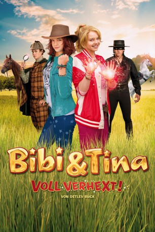
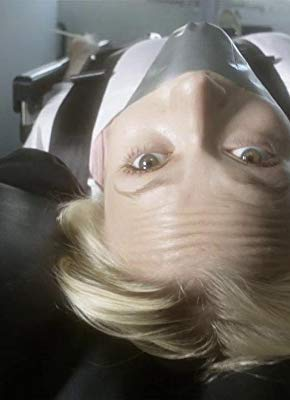
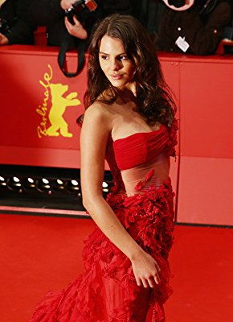
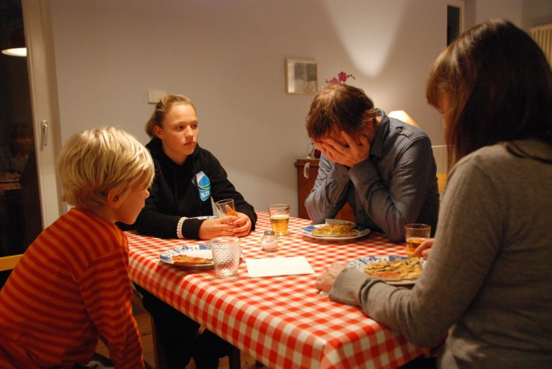

#4327 Bibi & Tina 2 - Voll verhext!
 gesehen am 19.09.2016
gesehen am 19.09.2016
 
 IMDB-Wertung: 5.4 / 10
IMDB-Wertung: 5.4 / 10  Metascore: 0
Metascore: 0 
Schlechte Stimmung auf Schloss Falkenstein. Mitten in den Vorbereitungen zum großen Kostümfest wird plötzlich eingebrochen. Nicht nur die wertvollen Gemälde sind weg, nein, es fehlt auch noch Graf Falko von Falkensteins gesamte Monokelsammlung. Doch damit nicht genug: Auch auf dem Martinshof ist die Laune im Keller. Kein einziger Feriengast ist bisher in Sicht. Bibi Blocksberg und Tina Martin müssen sich etwas einfallen lassen und setzen alles daran, die Werbetrommel zu rühren. Und Bibi verknallt sich zum ersten Mal! Ausgerechnet in Tarik Schmüll, der mit seinen vier chaotischen Geschwistern - den Schmülls - nicht nur den Reiterhof unsicher macht, sondern auch ein dunkles Geheimnis hütet...
Jahr: 2014
Dauer: 109 Minuten
FSK: 0
Land: Deutschland Studio: DCM Film DistributionTonspuren:
Untertitel: Deutsch,
Auflösung: 1080p (1920x1080) Größe: 7546 MB
Genre: Familie
Regisseur: Detlev Buck
Drehbuch: Dennis Shryack
Soundtrack:
Darsteller:
- Emilio Sakraya als Tarik Schmüll
- Matthias Schweighöfer als Prinz Charming
- Lina Larissa Strahl als Bibi Blocksberg
- Lisa-Marie Koroll als Tina Martin
- Louis Held als Alex von Falkenstein
- Michael Maertens als Falko von Falkenstein
- Martin Seifert als Butler Dagobert
- Winnie Böwe als Frau Martin
- Fabian Buch als Holger Martin
-  Mavie Hörbiger als Greta Müller
- Ivo Kortlang als Ole Schmüll
- Deborah Schneidermann als Jessie Schmüll
- Emil Pai Pötschke als Jacko Schmüll
- Helena Pieske als Lynnie Schmüll
- Lene Oderich als Charlotte
- Levi Strasser als Clemens
- Olli Schulz als Angus
- Johannes Brüssau als Aushilfe Dagobert
- Detlev Buck als Dr. Eichhorn
- Anna Maria Damm als Vampirella
- Raphael Dwinger als Onkel Archie
-  Ruby O. Fee als Sophia v. Gelenberg
- Charly Hübner als Hans Kakmann
- Ina Müller als Kathi Schmüll
-  Milan Peschel als Don Quijote
- Erika Rabau als Ältere Dame Rothenbrunn
- Tine Rogoll als Spusi
- Ruth Rosenfeld als Mutter
- Sebastian Soukup als Maler Franz Marc
- Désirée von Delft als Gräfin Viktoria
- Max von der Groeben als Freddy
- Wenka von Mikulicz als Spusi
Datei: X:\Kinder Collections\Bibi & Tina\Bibi & Tina 2 - Voll verhext! (2014, FSK0, 1920x1080).mkv seit 11.09.2016
Festplatte: Kinder-Filme+Trick
 Es gibt insgesamt 9 Filme in der Gruppe 'Kinder Collections\Bibi & Tina'
Es gibt insgesamt 9 Filme in der Gruppe 'Kinder Collections\Bibi & Tina'